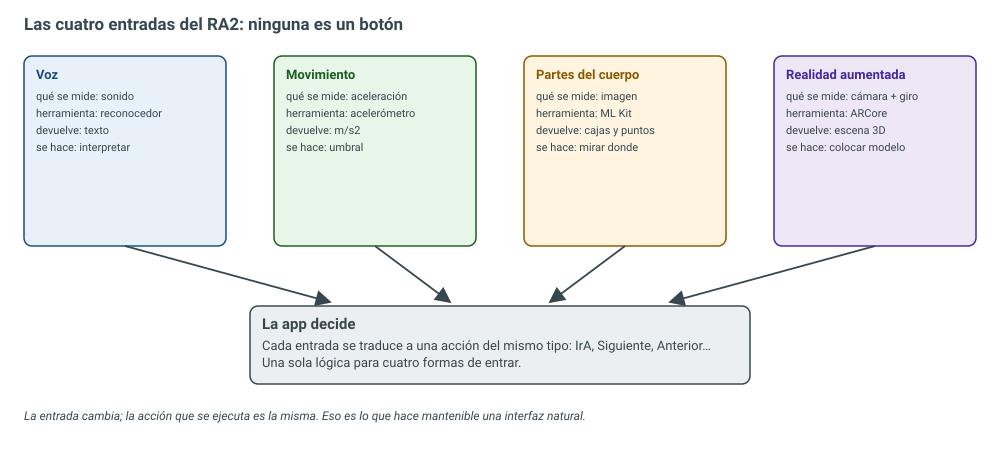
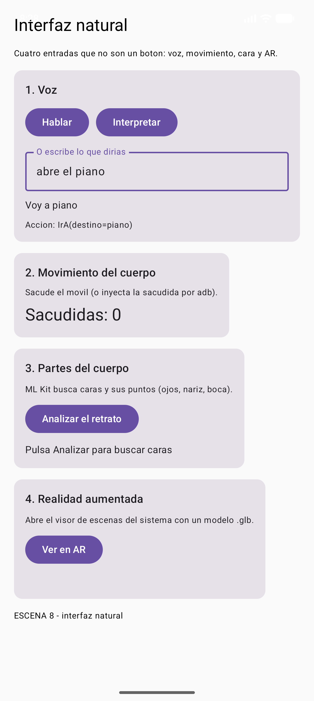
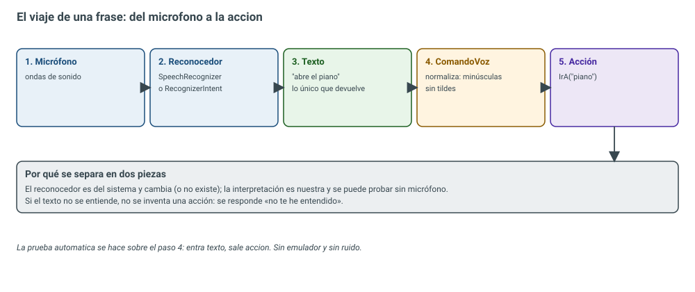
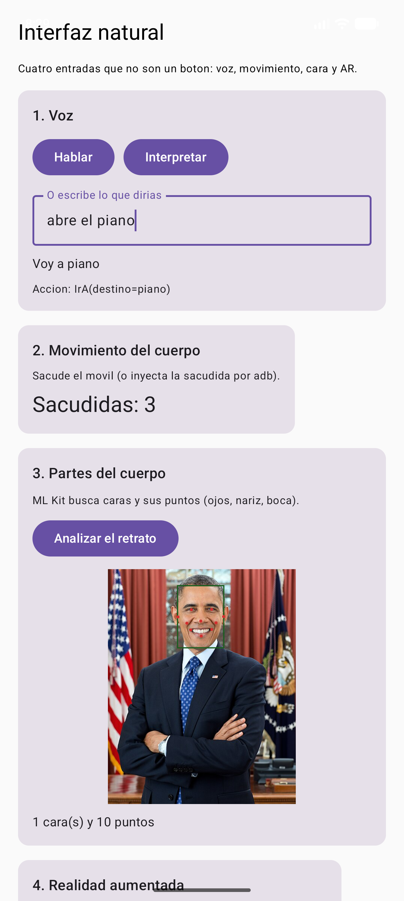
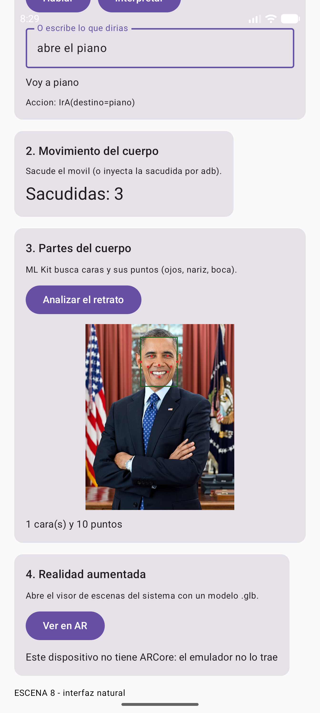

7.1 — Interfaces naturales
El trabajo de ingeniería: hacer que la app se maneje sin botones. Voz, movimiento del cuerpo, partes del cuerpo y realidad aumentada son las cuatro entradas que pide el resultado de aprendizaje, y las cuatro se resuelven con la misma idea: la entrada cambia, pero la acción que se ejecuta es la misma. El reconocedor devuelve texto; el acelerómetro, números; ML Kit, cajas y puntos; ARCore, una escena 3D. Ninguna de esas cosas es una acción: hay que interpretarlas. En esta unidad se construye la escena 8 del
IsmaelUIKitcon las cuatro entradas funcionando de verdad —la voz se interpreta, la sacudida se cuenta, la cara se detecta con sus diez puntos y el visor de AR se abre si el móvil lo trae— y se prueba todo con siete pruebas automáticas.
Resultado de aprendizaje que trabaja esta unidad
RA2. Genera interfaces naturales de usuario utilizando herramientas visuales (RD 405/2023,
módulo 0488 Desarrollo de interfaces). La unidad lo trabaja completo: los seis criterios de
evaluación, de la a a la f.
| CE | Criterio de evaluación (texto literal del real decreto) | Dónde se trabaja |
|---|---|---|
| RA2 a | Se han identificado las herramientas disponibles para el aprendizaje automático relacionadas con las interfaces de usuario. | §2, tabla de herramientas |
| RA2 b | Se ha creado una interfaz natural de usuario utilizando las herramientas disponibles. | §3, la escena 8 completa |
| RA2 c | Se ha utilizado el reconocimiento de voz para implementar acciones en las interfaces naturales de usuario. | §4, ComandoVoz y el reconocedor |
| RA2 d | Se ha incorporado la detección del movimiento del cuerpo para implementar acciones en las interfaces naturales de usuario. | §5, acelerómetro y sacudida |
| RA2 e | Se han integrado elementos de detección de partes del cuerpo para implementar acciones en las interfaces naturales de usuario. | §6, ML Kit y los diez puntos de la cara |
| RA2 f | Se ha integrado la realidad aumentada en los interfaces de usuario. | §7, Scene Viewer y ARCore |
1. Introducción: qué es «natural» y qué no
Una interfaz natural (NUI, Natural User Interface) es la que se maneja con algo que el usuario ya sabe hacer: hablar, moverse, mirar, señalar. La historia corta es esta:
| Época | Interfaz | El usuario tiene que aprender… |
|---|---|---|
| 1960-1980 | Línea de órdenes (CLI) | La sintaxis de cada orden |
| 1980-2010 | Interfaz gráfica (GUI) | Dónde está cada menú y cada icono |
| 2010-hoy | Interfaz natural (NUI) | Nada nuevo: usa voz, gesto y cámara |
«Natural» no significa «sin aprender nada»: significa que el canal es el que el cuerpo ya domina. El usuario no aprende a hablar para usar la app; la app aprende a entender lo que dice.
Y hay un detalle de ingeniería que separa un juguete de un producto: la entrada natural nunca sustituye a la entrada clásica. Un botón sigue ahí para quien no pueda hablar, para quien esté en un sitio con ruido o para quien simplemente prefiera pulsar. En la escena de esta unidad, al lado del botón «Hablar» hay un campo de texto: si el reconocedor no está o falla, la app sigue siendo usable.

2. Las herramientas del aprendizaje automático (criterio a)
El criterio pide identificarlas. Estas son las que se usan hoy en Android, con lo que devuelve cada una:
| Herramienta | Qué hace | Qué devuelve | ¿Funciona sin conexión? |
|---|---|---|---|
| ML Kit — Face Detection | Encuentra caras y sus puntos | Caja + 10 puntos (ojos, nariz, boca, orejas, mejillas) | Sí, modelo incluido en la app |
| ML Kit — Pose Detection | Encuentra el esqueleto de una persona | 33 puntos del cuerpo | Sí, modelo descargable |
| ML Kit — Text Recognition | Lee texto de una imagen | Bloques, líneas y palabras | Sí |
| ML Kit — Barcode / Objects / Labels | Códigos, objetos y etiquetas | Valores y categorías | Sí |
| MediaPipe | Soluciones de cuerpo, manos y cara en tiempo real | Puntos y gestos | Sí |
| TensorFlow Lite / LiteRT | Ejecuta un modelo propio entrenado por ti | Lo que devuelva el modelo | Sí |
| ARCore | Coloca objetos 3D en el mundo real | Pose de la cámara y planos | Sí (con el visor instalado) |
| SpeechRecognizer / RecognizerIntent | Convierte voz en texto | Texto | Según el servicio de voz |
| TextToSpeech | Convierte texto en voz | Audio | Sí (si hay voz instalada) |
| SensorManager | Lee acelerómetro, giroscopio, luz, proximidad… | Números con unidades | Sí, es hardware |
La elección no va por «cuál es más moderna», sino por lo que devuelve: si necesitas una acción concreta, un clasificador que devuelve una etiqueta es mejor que un detector que devuelve cien puntos. En esta unidad se usan tres: el reconocedor de voz, el acelerómetro y ML Kit Face Detection. La cuarta entrada, la realidad aumentada, no necesita modelo: la resuelve el sistema.
Herramientas «visuales»
El enunciado del RA2 dice «utilizando herramientas visuales». En 2026 eso incluye las herramientas de análisis visual (ML Kit, MediaPipe) y los visores (Scene Viewer), no solo los editores de pantallas. La interpretación que se usa en esta unidad es esa: herramientas que ven (cámara, imagen) y herramientas que muestran (visor 3D).
3. La interfaz natural de la unidad (criterio b)
La escena 8 del IsmaelUIKit tiene cuatro tarjetas, una por entrada. Cada una se puede probar sola y
todas conviven en la misma pantalla:

| Tarjeta | Entrada | Qué hace la app | Criterio |
|---|---|---|---|
| 1. Voz | Micrófono o texto | Reconoce, interpreta y contesta en voz alta | c |
| 2. Movimiento | Acelerómetro | Cuenta sacudidas | d |
| 3. Partes del cuerpo | Imagen + ML Kit | Dibuja la caja y los diez puntos de la cara | e |
| 4. Realidad aumentada | Cámara + ARCore | Abre el visor de escenas con un .glb |
f |
Toda la lógica de la escena cabe en una idea: cada entrada produce una AccionVoz, y la app
tiene un solo sitio donde se ejecutan las acciones. Si mañana se añade un gesto con la mano, se
traduce a la misma AccionVoz y no hay que tocar nada más.
/**
* Escena 8: interfaz natural (RA2).
*
* Cuatro formas de manejar la app sin tocar un boton con el dedo, que es lo que pide el
* resultado de aprendizaje: voz, movimiento del cuerpo, partes del cuerpo y realidad aumentada.
* Cada tarjeta es independiente y se puede probar sola.
*/
@Composable
private fun EscenaNatural() {
val contexto = LocalContext.current
var frase by rememberSaveable { mutableStateOf("") }
var accion by remember { mutableStateOf<AccionVoz?>(null) }
var estadoVoz by remember { mutableStateOf("Pulsa Hablar o escribe un comando") }
var sacudidas by remember { mutableIntStateOf(0) }
var ultima by remember { mutableLongStateOf(0L) }
var imagen by remember { mutableStateOf<ImageBitmap?>(null) }
var caras by remember { mutableStateOf<List<Cara>>(emptyList()) }
var estadoRostro by remember { mutableStateOf("Pulsa Analizar para buscar caras") }
var estadoAR by remember { mutableStateOf("") }
// --- sintetizador: la app contesta en voz alta ---
var motor by remember { mutableStateOf<TextToSpeech?>(null) }
DisposableEffect(contexto) {
val tts = TextToSpeech(contexto) { }
tts.language = Locale.forLanguageTag("es-ES")
motor = tts
onDispose { tts.stop(); tts.shutdown() }
}
fun hablar(texto: String) { motor?.speak(texto, TextToSpeech.QUEUE_FLUSH, null, "respuesta") }
// --- reconocedor de voz del sistema: devuelve texto, no acciones ---
val lanzadorVoz = rememberLauncherForActivityResult(ActivityResultContracts.StartActivityForResult()) { resultado ->
val texto = resultado.data?.getStringArrayListExtra(RecognizerIntent.EXTRA_RESULTS)?.firstOrNull()
if (texto.isNullOrBlank()) {
estadoVoz = "Sin resultado: este dispositivo no tiene reconocedor instalado"
} else {
frase = texto
val interpretada = ComandoVoz.interpretar(texto)
accion = interpretada
estadoVoz = ComandoVoz.respuesta(interpretada)
hablar(ComandoVoz.respuesta(interpretada))
}
}
// --- movimiento: el acelerometro avisa de cada sacudida (con freno para no contar 30) ---
RecordarSacudidas {
val ahora = System.currentTimeMillis()
if (ahora - ultima > 700) { // una sacudida dura varios frames
ultima = ahora
sacudidas += 1
}
}
Column(
modifier = Modifier.fillMaxSize().verticalScroll(rememberScrollState()).padding(20.dp),
verticalArrangement = Arrangement.spacedBy(16.dp),
) {
Text("Interfaz natural", style = MaterialTheme.typography.headlineSmall)
Text("Cuatro entradas que no son un boton: voz, movimiento, cara y AR.", style = MaterialTheme.typography.bodySmall)
// ---------- 1. VOZ ----------
Card {
Column(Modifier.padding(16.dp), verticalArrangement = Arrangement.spacedBy(10.dp)) {
Text("1. Voz", style = MaterialTheme.typography.titleMedium)
Row(horizontalArrangement = Arrangement.spacedBy(10.dp)) {
Button(onClick = {
val intent = Intent(RecognizerIntent.ACTION_RECOGNIZE_SPEECH).apply {
putExtra(RecognizerIntent.EXTRA_LANGUAGE_MODEL, RecognizerIntent.LANGUAGE_MODEL_FREE_FORM)
putExtra(RecognizerIntent.EXTRA_LANGUAGE, "es-ES")
putExtra(RecognizerIntent.EXTRA_PROMPT, "Di: siguiente, atras, piano...")
}
try {
lanzadorVoz.launch(intent) // abre el cuadro de dialogo del sistema
} catch (e: ActivityNotFoundException) {
estadoVoz = "Este dispositivo no trae reconocedor de voz"
}
}) { Text("Hablar") }
Button(onClick = {
val interpretada = ComandoVoz.interpretar(frase)
accion = interpretada
estadoVoz = ComandoVoz.respuesta(interpretada)
hablar(ComandoVoz.respuesta(interpretada))
}) { Text("Interpretar") }
}
OutlinedTextField(
value = frase,
onValueChange = { frase = it },
label = { Text("O escribe lo que dirias") },
modifier = Modifier.fillMaxWidth().testTag("campo-voz"),
)
Text(estadoVoz, style = MaterialTheme.typography.bodyMedium, modifier = Modifier.testTag("resultado-voz"))
accion?.let { Text("Accion: $it", style = MaterialTheme.typography.bodySmall) }
}
}
// ---------- 2. MOVIMIENTO ----------
Card {
Column(Modifier.padding(16.dp), verticalArrangement = Arrangement.spacedBy(8.dp)) {
Text("2. Movimiento del cuerpo", style = MaterialTheme.typography.titleMedium)
Text("Sacude el movil (o inyecta la sacudida por adb).", style = MaterialTheme.typography.bodySmall)
Text("Sacudidas: $sacudidas", style = MaterialTheme.typography.headlineSmall, modifier = Modifier.testTag("contador-sacudidas"))
}
}
// ---------- 3. PARTES DEL CUERPO ----------
Card {
Column(Modifier.padding(16.dp), verticalArrangement = Arrangement.spacedBy(10.dp)) {
Text("3. Partes del cuerpo", style = MaterialTheme.typography.titleMedium)
Text("ML Kit busca caras y sus puntos (ojos, nariz, boca).", style = MaterialTheme.typography.bodySmall)
Button(onClick = {
val mapa = BitmapFactory.decodeStream(contexto.assets.open("retrato.jpg"))
imagen = mapa.asImageBitmap()
Rostro.analizar(mapa, { lista ->
caras = lista
val puntos = lista.firstOrNull()?.puntos?.size ?: 0
estadoRostro = "${lista.size} cara(s) y $puntos puntos"
}, { error -> estadoRostro = "Error: ${error.message}" })
}) { Text("Analizar el retrato") }
imagen?.let { mapa ->
Canvas(Modifier.fillMaxWidth().height(260.dp).testTag("lienzo-rostro")) {
// La foto se dibuja escalada y centrada; las cajas se dibujan en la misma escala.
val escala = min(size.width / mapa.width, size.height / mapa.height)
val dx = (size.width - mapa.width * escala) / 2f
val dy = (size.height - mapa.height * escala) / 2f
drawImage(
image = mapa,
dstOffset = IntOffset(dx.toInt(), dy.toInt()),
dstSize = IntSize((mapa.width * escala).toInt(), (mapa.height * escala).toInt()),
)
caras.forEach { cara ->
drawRect(
color = Color(0xFF1B5E20),
topLeft = Offset(dx + cara.caja.left * escala, dy + cara.caja.top * escala),
size = Size(cara.caja.width() * escala, cara.caja.height() * escala),
style = Stroke(width = 4f),
)
cara.puntos.forEach { punto ->
drawCircle(
color = Color(0xFFD32F2F),
radius = 5f,
center = Offset(dx + punto.x * escala, dy + punto.y * escala),
)
}
}
}
}
Text(estadoRostro, style = MaterialTheme.typography.bodyMedium, modifier = Modifier.testTag("resultado-rostro"))
}
}
// ---------- 4. REALIDAD AUMENTADA ----------
Card {
Column(Modifier.padding(16.dp), verticalArrangement = Arrangement.spacedBy(10.dp)) {
Text("4. Realidad aumentada", style = MaterialTheme.typography.titleMedium)
Text("Abre el visor de escenas del sistema con un modelo .glb.", style = MaterialTheme.typography.bodySmall)
Button(onClick = {
if (RealidadAumentada.haySoporte(contexto)) {
estadoAR = "Abriendo el visor de AR..."
try {
contexto.startActivity(RealidadAumentada.intentEscena(RealidadAumentada.MODELO_EJEMPLO, "Astronauta"))
} catch (e: ActivityNotFoundException) {
estadoAR = "Hay ARCore pero no hay visor de escenas instalado"
}
} else {
estadoAR = "Este dispositivo no tiene ARCore: el emulador no lo trae"
}
}) { Text("Ver en AR") }
Text(estadoAR, style = MaterialTheme.typography.bodyMedium, modifier = Modifier.testTag("resultado-ar"))
}
}
Text("ESCENA 8 - interfaz natural", style = MaterialTheme.typography.bodySmall)
}
}
4. Voz: del sonido a la acción (criterio c)
4.1 Las dos formas de reconocer voz en Android
RecognizerIntent |
SpeechRecognizer |
|
|---|---|---|
| Interfaz | La del sistema (un cuadro de diálogo) | La que hagas tú |
| Permiso | No hace falta | RECORD_AUDIO |
| Duración | Una frase y se cierra | Continua, tú decides cuándo para |
| Resultado | Lista de textos candidatos | Callbacks con resultados parciales |
| Uso típico | Primer contacto, prototipos, comandos sueltos | Asistentes, dictado, manos libres |
En esta unidad se usa RecognizerIntent: no necesita permiso, no hay que dibujar nada y
devuelve el texto en EXTRA_RESULTS. Para un asistente continuo habría que pasar a
SpeechRecognizer, que sí pide RECORD_AUDIO.
4.2 El viaje de la frase

El reconocedor no devuelve acciones: devuelve texto. Y el texto viene como viene: con mayúsculas, con tildes, con muletillas («oye, ve al piano»). Por eso hay una pieza intermedia que normaliza e interpreta.
4.3 El intérprete de comandos
package com.example.uikit
import java.text.Normalizer
/**
* Lo que la app entiende cuando el usuario habla.
*
* El reconocimiento de voz devuelve TEXTO; interpretarlo es trabajo nuestro.
* Por eso esta parte es Kotlin puro: se puede probar sin microfono, sin emulador y sin red.
*/
sealed interface AccionVoz {
/** "abre el piano", "ve a la auditoria"... */
data class IrA(val destino: String) : AccionVoz
/** "siguiente", "adelante". */
data object Siguiente : AccionVoz
/** "atras", "anterior", "volver". */
data object Anterior : AccionVoz
/** "ayuda", "que puedo decir". */
data object Ayuda : AccionVoz
/** Cualquier otra cosa: se guarda la frase para poder repetirla o depurarla. */
data class Desconocida(val frase: String) : AccionVoz
}
/**
* Traduce una frase dicha en voz alta a una accion de la interfaz.
*
* Reglas de la casa:
* 1. Se normaliza (minusculas y sin tildes) porque el reconocedor no es constante:
* unas veces devuelve "atras" y otras "atrás".
* 2. Se busca por palabra contenida, no por igualdad: la gente dice "oye, ve atras".
* 3. Si no se entiende, NO se inventa una accion: se devuelve Desconocida.
*/
object ComandoVoz {
/** Destinos que entiende la app, con las palabras que los activan. */
private val DESTINOS = mapOf(
"piano" to "piano",
"teclado" to "piano",
"auditoria" to "auditoria",
"contraste" to "auditoria",
"catalogo" to "catalogo",
"inicio" to "catalogo",
"voz" to "voz",
)
/** Minusculas y sin tildes: "Atrás" y "atras" tienen que caer en la misma rama. */
fun normalizar(frase: String): String =
Normalizer.normalize(frase.lowercase().trim(), Normalizer.Form.NFD)
.replace(Regex("\\p{Mn}+"), "") // quita los acentos ya separados
/** La funcion que se prueba: texto -> accion. */
fun interpretar(frase: String): AccionVoz {
val limpia = normalizar(frase)
if (limpia.isEmpty()) return AccionVoz.Desconocida(frase)
if (limpia.contains("siguiente") || limpia.contains("adelante")) return AccionVoz.Siguiente
if (limpia.contains("atras") || limpia.contains("anterior") || limpia.contains("volver")) {
return AccionVoz.Anterior
}
if (limpia.contains("ayuda") || limpia.contains("que puedo decir")) return AccionVoz.Ayuda
DESTINOS.entries.firstOrNull { limpia.contains(it.key) }?.let { return AccionVoz.IrA(it.value) }
return AccionVoz.Desconocida(frase) // no se adivina: se dice que no se entiende
}
/** Frase que se le contesta al usuario (la dice el sintetizador de voz). */
fun respuesta(accion: AccionVoz): String = when (accion) {
is AccionVoz.IrA -> "Voy a ${accion.destino}"
AccionVoz.Siguiente -> "Siguiente"
AccionVoz.Anterior -> "Atras"
AccionVoz.Ayuda -> "Puedes decir: siguiente, atras, piano, auditoria o catalogo"
is AccionVoz.Desconocida -> "No te he entendido"
}
}
Tres decisiones que están en el código y que se preguntan:
- Normalizar (
normalizar): minúsculas y sin tildes. El reconocedor no es constante: unas veces devuelveatrásy otrasatras. Si comparas contra una sola forma, falla la mitad de las veces. - Buscar contenido, no igualdad:
limpia.contains("piano")acepta «abre el piano», «pon el piano» y «oye, el piano». La gente no habla en comandos exactos. - No inventar: si no se entiende, se devuelve
Desconociday la app contesta «No te he entendido». Una interfaz que adivina es peor que una que pregunta.
4.4 La respuesta hablada
El sintetizador (TextToSpeech) cierra el bucle: la app no solo obedece, contesta. Se inicializa
una vez y se libera al salir de la pantalla:
val tts = TextToSpeech(contexto) { }
tts.language = Locale.forLanguageTag("es-ES")
// ...
tts.speak("Voy a piano", TextToSpeech.QUEUE_FLUSH, null, "respuesta")
QUEUE_FLUSH corta lo que estuviera diciendo: si el usuario da dos órdenes seguidas, no se solapan.
Y shutdown() en el onDispose es obligatorio: un TextToSpeech sin cerrar mantiene el servicio de
voz vivo y consume batería.
4.5 Lo que se prueba (y lo que no)
La prueba automática se hace sobre el paso 4, no sobre el micrófono:
assertEquals(AccionVoz.Siguiente, ComandoVoz.interpretar("siguiente"))
assertEquals(AccionVoz.IrA("piano"), ComandoVoz.interpretar("abre el piano"))
assertEquals(ComandoVoz.interpretar("atras"), ComandoVoz.interpretar("Atrás"))
Probar el micrófono en un test es frágil; probar la interpretación es determinista: entra texto, sale acción. Eso es lo que se automatiza.
5. Movimiento del cuerpo (criterio d)
5.1 Qué mide un acelerómetro
Un acelerómetro devuelve aceleración en m/s², incluida la gravedad. Con el móvil quieto sobre la
mesa marca (0, 9.8, 0); en caída libre, (0, 0, 0). Lo que interesa no es cada eje por separado,
sino la magnitud del vector:
m = √(x² + y² + z²)
Y la regla es una resta: si la magnitud se aleja de la gravedad más que un umbral, es una sacudida.
| Sensor | Qué devuelve | Unidad | Para qué sirve en una interfaz |
|---|---|---|---|
TYPE_ACCELEROMETER |
Aceleración (con gravedad) | m/s² | Sacudidas, inclinación, pasos |
TYPE_GYROSCOPE |
Velocidad de giro | rad/s | Girar, rotar un objeto |
TYPE_MAGNETIC_FIELD |
Campo magnético | µT | Brújula |
TYPE_PROXIMITY |
Distancia al obstáculo | cm | Apagar la pantalla al acercar la cara |
TYPE_LIGHT |
Luz ambiente | lx | Ajustar el brillo |
TYPE_STEP_COUNTER |
Pasos desde el arranque | pasos | Poderosis, actividad |
TYPE_ROTATION_VECTOR |
Orientación | cuaternión | Realidad aumentada |
5.2 El detector y su ciclo de vida
package com.example.uikit
import android.content.Context
import android.hardware.Sensor
import android.hardware.SensorEvent
import android.hardware.SensorEventListener
import android.hardware.SensorManager
import androidx.compose.runtime.Composable
import androidx.compose.runtime.DisposableEffect
import androidx.compose.runtime.rememberUpdatedState
import androidx.compose.ui.platform.LocalContext
import kotlin.math.abs
import kotlin.math.sqrt
/**
* Deteccion de sacudida con el acelerometro.
*
* Un acelerometro mide aceleracion en m/s2. Con el movil quieto sobre la mesa marca
* ~9,8 (la gravedad); al sacudirlo aparecen picos de 15 a 30. La regla es simple:
* si la magnitud se aleja de la gravedad mas de un umbral, es una sacudida.
*
* La cuenta va en un objeto aparte para poder probarla sin sensor ni emulador.
*/
object DetectorSacudida {
/** Cuanto tiene que alejarse de la gravedad para contar como sacudida (m/s2). */
const val UMBRAL = 6.0f
/** Longitud del vector de aceleracion: sqrt(x2 + y2 + z2). */
fun magnitud(x: Float, y: Float, z: Float): Float = sqrt(x * x + y * y + z * z)
/** true si la magnitud se aleja de la gravedad mas que el umbral. */
fun esSacudida(magnitud: Float): Boolean =
abs(magnitud - SensorManager.GRAVITY_EARTH) > UMBRAL
}
/**
* Registra el acelerometro mientras la pantalla esta viva y avisa en cada sacudida.
*
* DisposableEffect es el equivalente a onResume/onPause: registra al entrar en la
* composicion y da de baja al salir. Si no se da de baja, el sensor sigue consumiendo
* bateria con la pantalla apagada.
*/
@Composable
fun RecordarSacudidas(onSacudida: () -> Unit) {
val contexto = LocalContext.current
val aviso = rememberUpdatedState(onSacudida) // siempre llama a la ultima lambda
DisposableEffect(contexto) {
val gestor = contexto.getSystemService(Context.SENSOR_SERVICE) as SensorManager
val sensor = gestor.getDefaultSensor(Sensor.TYPE_ACCELEROMETER)
val escucha = object : SensorEventListener {
override fun onSensorChanged(evento: SensorEvent) {
val m = DetectorSacudida.magnitud(evento.values[0], evento.values[1], evento.values[2])
if (DetectorSacudida.esSacudida(m)) aviso.value()
}
override fun onAccuracyChanged(sensor: Sensor?, precision: Int) = Unit
}
if (sensor != null) {
gestor.registerListener(escucha, sensor, SensorManager.SENSOR_DELAY_GAME)
}
onDispose { gestor.unregisterListener(escucha) } // sin esto, fuga de sensor
}
}
Dos cosas que hay que mirar con lupa:
- La cuenta va aparte (
DetectorSacudida): así se prueba sin sensor. La prueba dice que9.8no es sacudida y que25sí. DisposableEffectregistra el sensor al entrar en la pantalla y lo da de baja al salir. Si no se da de baja, el sensor sigue consumiendo batería con la pantalla apagada. Es el error más caro y el más habitual.
5.3 El freno de las sacudidas
Una sacudida real dura varios frames: el sensor entrega 20-50 eventos en medio segundo. Sin freno, el contador subiría a 30 con un solo meneo. Por eso la escena guarda la marca de tiempo y descarta todo lo que llegue en los 700 ms siguientes:
5.4 Cómo se prueba sin agitar el móvil
El emulador permite inyectar valores del sensor por consola:
adb emu sensor set acceleration 0:32:0 # pico de 32 m/s2: sacudida
adb emu sensor set acceleration 0:9.8:0 # vuelta a la gravedad
Resultado real en la escena, tras tres inyecciones: Sacudidas: 3.
Limitación conocida
Un acelerómetro solo no distingue una sacudida de una caída libre: ambas se alejan de la
gravedad. Para separarlas hay que combinar con el giroscopio o con la detección de actividad. La
prueba lo deja escrito a propósito (esSacudida(0f) es true).
6. Partes del cuerpo: ML Kit y los diez puntos de la cara (criterio e)
6.1 Qué devuelve el detector
ML Kit Face Detection devuelve, por cada cara, una caja y hasta diez puntos:
| Punto | Constante | Código real |
|---|---|---|
| Boca (abajo) | MOUTH_BOTTOM |
0 |
| Boca (izquierda) | MOUTH_LEFT |
5 |
| Boca (derecha) | MOUTH_RIGHT |
11 |
| Ojo izquierdo | LEFT_EYE |
4 |
| Ojo derecho | RIGHT_EYE |
10 |
| Oreja izquierda | LEFT_EAR |
3 |
| Oreja derecha | RIGHT_EAR |
9 |
| Mejilla izquierda | LEFT_CHEEK |
1 |
| Mejilla derecha | RIGHT_CHEEK |
7 |
| Nariz | NOSE_BASE |
6 |
Los códigos no van seguidos: nariz es 6, ojo derecho 10, boca derecha 11. Por eso el código
usa las constantes y nunca números sueltos: quien escriba when (tipo) { 6 -> "nariz" } está
usando un número mágico que puede cambiar de versión. Los valores de la tabla están comprobados en el
emulador con una prueba que los imprime.
6.2 El código
package com.example.uikit
import android.graphics.Bitmap
import android.graphics.Rect
import com.google.mlkit.vision.common.InputImage
import com.google.mlkit.vision.face.FaceDetection
import com.google.mlkit.vision.face.FaceDetector
import com.google.mlkit.vision.face.FaceDetectorOptions
import com.google.mlkit.vision.face.FaceLandmark
/** Un punto caracteristico de la cara (ojo, nariz, boca...) con su posicion en la imagen. */
data class PuntoCara(
val tipo: Int, // FaceLandmark.LEFT_EYE, NOSE_BASE, MOUTH_LEFT...
val x: Float,
val y: Float,
)
/** Una cara detectada: donde esta y que puntos se han reconocido. */
data class Cara(
val caja: Rect, // rectangulo que la encierra, en pixeles de la imagen
val puntos: List<PuntoCara>, // ojos, cejas, nariz, boca, orejas
)
/**
* Deteccion de caras y de sus partes con ML Kit (modelo incluido en la app, sin conexion).
*
* Esto cubre el criterio "deteccion de partes del cuerpo": la cara es una parte del cuerpo,
* y sus puntos (ojos, nariz, boca, orejas) son los que usa una interfaz natural para saber
* si miras a la pantalla, si sonries o hacia donde giras la cabeza.
*
* El detector se crea UNA vez (es caro) y se reutiliza. El resultado llega por callback
* porque el proceso es asincrono y no bloquea el hilo de la interfaz.
*/
object Rostro {
private val detector: FaceDetector by lazy {
FaceDetection.getClient(
FaceDetectorOptions.Builder()
.setPerformanceMode(FaceDetectorOptions.PERFORMANCE_MODE_ACCURATE)
.setLandmarkMode(FaceDetectorOptions.LANDMARK_MODE_ALL) // pide los puntos
.build(),
)
}
/**
* Analiza una imagen y devuelve sus caras.
* Si la imagen no tiene personas, devuelve una lista vacia (no es un error).
*/
fun analizar(
imagen: Bitmap,
alTerminar: (List<Cara>) -> Unit,
alFallar: (Exception) -> Unit = {},
) {
detector.process(InputImage.fromBitmap(imagen, 0))
.addOnSuccessListener { caras ->
alTerminar(
caras.map { cara ->
Cara(
caja = cara.boundingBox,
puntos = cara.allLandmarks.map { PuntoCara(it.landmarkType, it.position.x, it.position.y) },
)
},
)
}
.addOnFailureListener { error -> alFallar(error) }
}
/**
* Nombre legible de un tipo de punto.
*
* Los codigos NO se inventan: son las constantes de FaceLandmark, y NO van seguidos.
* Estos son los diez que devuelve ML Kit, comprobados en el emulador:
* MOUTH_BOTTOM = 0 MOUTH_RIGHT = 11 MOUTH_LEFT = 5 RIGHT_EYE = 10
* LEFT_EYE = 4 RIGHT_EAR = 9 LEFT_EAR = 3 RIGHT_CHEEK = 7
* LEFT_CHEEK = 1 NOSE_BASE = 6
*/
fun nombrePunto(tipo: Int): String = when (tipo) {
FaceLandmark.MOUTH_BOTTOM -> "boca (abajo)"
FaceLandmark.MOUTH_RIGHT -> "boca (derecha)"
FaceLandmark.MOUTH_LEFT -> "boca (izquierda)"
FaceLandmark.RIGHT_EYE -> "ojo derecho"
FaceLandmark.LEFT_EYE -> "ojo izquierdo"
FaceLandmark.RIGHT_EAR -> "oreja derecha"
FaceLandmark.LEFT_EAR -> "oreja izquierda"
FaceLandmark.RIGHT_CHEEK -> "mejilla derecha"
FaceLandmark.LEFT_CHEEK -> "mejilla izquierda"
FaceLandmark.NOSE_BASE -> "nariz"
else -> "punto $tipo"
}
}
El detector se crea una sola vez (by lazy): inicializarlo es caro y se reutiliza. El resultado
llega por callback porque el proceso es asíncrono y no puede bloquear el hilo de la interfaz.
6.3 El resultado real

La escena dibuja la foto escalada y centrada, y pinta encima con la misma escala:
val escala = min(size.width / mapa.width, size.height / mapa.height)
val dx = (size.width - mapa.width * escala) / 2f
drawRect(..., topLeft = Offset(dx + cara.caja.left * escala, dy + cara.caja.top * escala), ...)
Si la caja se dibuja sin aplicar la escala, aparece desplazada: es el fallo clásico de las coordenadas. La imagen está en píxeles (500 × 624) y el lienzo en dp; hay que convertir.
6.4 Del rostro al cuerpo entero
Para el cuerpo completo, ML Kit ofrece Pose Detection, que devuelve 33 puntos (hombros, codos, caderas, rodillas, tobillos…). La estructura del código es la misma: imagen → detector → lista de puntos → decisión. La diferencia es el número de puntos y el modelo, que en pose se descarga la primera vez.
7. Realidad aumentada (criterio f)
7.1 No hace falta un motor 3D
Android trae un visor de escenas del sistema (com.google.ar.core) al que se le pasa un modelo
por un intent. La app no dibuja el modelo: solo construye la URI y el sistema abre la cámara, busca
un plano y coloca el objeto.
| Parte de la URI | Qué significa |
|---|---|
intent://arvr.google.com/scene-viewer/1.0 |
Esquema intent + host del visor |
file=https://…/modelo.glb |
El modelo, en una URL pública |
mode=ar_preferred |
AR si se puede; 3D si no (ar_only, 3d_only) |
title=Astronauta |
Nombre que se muestra |
#Intent;scheme=https;package=com.google.ar.core;action=…;end; |
El bloque que lo convierte en intent |
7.2 El código
package com.example.uikit
import android.content.Context
import android.content.Intent
import android.content.pm.PackageManager
/**
* Realidad aumentada por Scene Viewer.
*
* No hace falta meter un motor 3D en la app: Android tiene un visor de escenas del sistema
* (com.google.ar.core) al que se le pasa un modelo .glb por un intent. La app solo construye
* la URI; el sistema abre la camara, coloca el modelo y lo mueve.
*
* La URI es un "intent URI": no es una URL de navegador, se convierte en Intent con
* Intent.parseUri(..., URI_INTENT_SCHEME).
*/
object RealidadAumentada {
/** Modelo de ejemplo publico (glTF binario) para probar sin tener uno propio. */
const val MODELO_EJEMPLO = "https://modelviewer.dev/shared-assets/models/Astronaut.glb"
/**
* Construye la URI del visor de escenas.
* file= modelo .glb alojado en una URL publica
* mode= ar_preferred: realidad aumentada si el movil puede, 3D si no
* title= nombre que se muestra
* El bloque final (#Intent;...) es el que convierte esto en un intent de Android.
*/
fun uriEscena(modelo: String, titulo: String): String =
"intent://arvr.google.com/scene-viewer/1.0" +
"?file=$modelo&mode=ar_preferred&title=$titulo" +
"#Intent;scheme=https;package=com.google.ar.core;action=android.intent.action.VIEW;end;"
/** El intent listo para lanzar. */
fun intentEscena(modelo: String, titulo: String): Intent =
Intent.parseUri(uriEscena(modelo, titulo), Intent.URI_INTENT_SCHEME)
/**
* true si el movil trae el visor de AR (ARCore instalado y compatible).
* En el emulador suele ser false: por eso la escena avisa en vez de fallar.
*/
fun haySoporte(contexto: Context): Boolean = try {
contexto.packageManager.getPackageInfo("com.google.ar.core", 0)
true
} catch (e: PackageManager.NameNotFoundException) {
false
}
}
La URI no se lanza con Intent(ACTION_VIEW, Uri.parse(...)): hay que convertirla con
Intent.parseUri(..., Intent.URI_INTENT_SCHEME), que es lo que entiende el bloque #Intent;…. Y en
Android 11 o superior hace falta declarar el paquete en el manifiesto para poder preguntar si está:
7.3 Lo que pasa en el emulador (y por qué se dice)

Comprobar antes de lanzar es parte del trabajo: haySoporte() pregunta por el paquete y, si
no está, la app escribe el motivo. Un ActivityNotFoundException sin capturar sería un cierre
inesperado delante del usuario.
Dónde sí se ve
En un móvil con ARCore instalado (la mayoría de gama media y alta desde 2018) el botón abre el visor y el astronauta aparece sobre la mesa. En el emulador, el aviso es la respuesta correcta.
8. Lo que se ha probado (23 pruebas)
Las siete pruebas de la unidad van en src/androidTest porque tocan ML Kit, intents y el árbol de
Compose:
| Prueba | Qué demuestra | Criterio |
|---|---|---|
laVozSeTraduceAAcciones |
«siguiente», «atrás», «abre el piano» → acción correcta | c |
lasTildesYLasMayusculasNoImportan |
«Atrás» y «atras» dan lo mismo | c |
loQueNoSeEntiendeNoSeInventa |
Texto raro → Desconocida, no una acción al azar |
c |
elDetectorDistingueQuietoDeSacudida |
9,8 no es sacudida; 25 sí | d |
losDiezPuntosDeLaCaraTienenNombre |
Los diez códigos de ML Kit tienen nombre | e |
elDetectorDeCarasArrancaYNoInventaCaras |
Imagen en blanco → 0 caras | e |
laUriDeArSeConvierteEnUnIntentDelVisor |
La URI se convierte en intent de com.google.ar.core |
f |
package com.example.uikit
import android.content.Intent
import android.graphics.Bitmap
import android.graphics.Color as ColorAndroid
import com.google.mlkit.vision.face.FaceLandmark
import org.junit.Assert.assertEquals
import org.junit.Assert.assertFalse
import org.junit.Assert.assertTrue
import org.junit.Test
import java.util.concurrent.CountDownLatch
import java.util.concurrent.TimeUnit
/**
* Pruebas de la interfaz natural (criterio de evaluacion 2a-2f).
*
* Lo que se puede probar sin microfono, sin mover el movil y sin camara:
* - que el texto reconocido se traduce a la accion correcta (voz)
* - que el detector de sacudidas distingue quieto de sacudida (movimiento)
* - que la URI de AR se convierte en un intent valido (realidad aumentada)
* - que el detector de caras arranca y no inventa caras donde no las hay (partes del cuerpo)
*/
class InterfazNaturalTest {
// ---------- 1. VOZ ----------
@Test
fun laVozSeTraduceAAcciones() {
assertEquals(AccionVoz.Siguiente, ComandoVoz.interpretar("siguiente"))
assertEquals(AccionVoz.Siguiente, ComandoVoz.interpretar("vamos adelante"))
assertEquals(AccionVoz.Anterior, ComandoVoz.interpretar("vuelve atras"))
assertEquals(AccionVoz.IrA("piano"), ComandoVoz.interpretar("abre el piano"))
assertEquals(AccionVoz.IrA("auditoria"), ComandoVoz.interpretar("quiero ver la auditoria"))
assertEquals(AccionVoz.Ayuda, ComandoVoz.interpretar("que puedo decir"))
}
@Test
fun lasTildesYLasMayusculasNoImportan() {
// El reconocedor no es constante: unas veces devuelve "atrás" y otras "atras".
assertEquals(ComandoVoz.interpretar("atras"), ComandoVoz.interpretar("Atrás"))
assertEquals("atras", ComandoVoz.normalizar(" ATRÁS "))
}
@Test
fun loQueNoSeEntiendeNoSeInventa() {
assertEquals(AccionVoz.Desconocida(""), ComandoVoz.interpretar(""))
val rara = ComandoVoz.interpretar("ponme un cafe con leche")
assertTrue(rara is AccionVoz.Desconocida)
// Y la app contesta algo, no se queda muda.
assertTrue(ComandoVoz.respuesta(rara).isNotEmpty())
}
// ---------- 2. MOVIMIENTO ----------
@Test
fun elDetectorDistingueQuietoDeSacudida() {
// Quieto sobre la mesa: la magnitud es la gravedad.
assertEquals(9.8f, DetectorSacudida.magnitud(0f, 9.8f, 0f), 0.01f)
assertFalse(DetectorSacudida.esSacudida(9.8f))
// Sacudida fuerte: pico de 25 m/s2.
assertTrue(DetectorSacudida.esSacudida(25f))
// Y una caida libre tambien dispara: es una limitacion conocida del acelerometro solo.
assertTrue(DetectorSacudida.esSacudida(0f))
}
// ---------- 3. REALIDAD AUMENTADA ----------
@Test
fun laUriDeArSeConvierteEnUnIntentDelVisor() {
val uri = RealidadAumentada.uriEscena(RealidadAumentada.MODELO_EJEMPLO, "Astronauta")
assertTrue(uri.contains("file="))
assertTrue(uri.contains("mode=ar_preferred"))
assertTrue(uri.contains("package=com.google.ar.core"))
val intent = RealidadAumentada.intentEscena(RealidadAumentada.MODELO_EJEMPLO, "Astronauta")
assertEquals("com.google.ar.core", intent.`package`)
assertEquals(Intent.ACTION_VIEW, intent.action)
}
// ---------- 4. PARTES DEL CUERPO ----------
@Test
fun losDiezPuntosDeLaCaraTienenNombre() {
// Los codigos son las constantes de ML Kit: ni uno solo se queda sin nombre.
assertEquals("nariz", Rostro.nombrePunto(FaceLandmark.NOSE_BASE))
assertEquals("ojo izquierdo", Rostro.nombrePunto(FaceLandmark.LEFT_EYE))
assertEquals("boca (abajo)", Rostro.nombrePunto(FaceLandmark.MOUTH_BOTTOM))
// No se recorren numeros sueltos: se recorren LAS constantes de ML Kit.
val codigos = listOf(
FaceLandmark.MOUTH_BOTTOM, FaceLandmark.MOUTH_RIGHT, FaceLandmark.MOUTH_LEFT,
FaceLandmark.RIGHT_EYE, FaceLandmark.LEFT_EYE, FaceLandmark.RIGHT_EAR,
FaceLandmark.LEFT_EAR, FaceLandmark.RIGHT_CHEEK, FaceLandmark.LEFT_CHEEK,
FaceLandmark.NOSE_BASE,
)
codigos.forEach { codigo ->
println("PUNTO $codigo -> ${Rostro.nombrePunto(codigo)}")
assertFalse("el punto $codigo no tiene nombre", Rostro.nombrePunto(codigo).startsWith("punto "))
}
}
@Test
fun elDetectorDeCarasArrancaYNoInventaCaras() {
// Imagen en blanco: no hay ninguna persona, luego la lista tiene que venir vacia.
val blanca = Bitmap.createBitmap(120, 120, Bitmap.Config.ARGB_8888)
blanca.eraseColor(ColorAndroid.WHITE)
val fin = CountDownLatch(1)
var resultado: List<Cara>? = null
Rostro.analizar(blanca, { caras -> resultado = caras; fin.countDown() }, { fin.countDown() })
assertTrue("el detector no respondio a tiempo", fin.await(30, TimeUnit.SECONDS))
assertEquals(0, resultado?.size ?: -1)
}
}
Y la salida real, al lanzarlas:
com.example.uikit.InterfazNaturalTest:.......
Time: 35.654
OK (23 tests)
23 pruebas en verde en total (las 16 de las unidades anteriores más las 7 de esta).
La prueba de la cara en blanco es la más importante de todas: demuestra que el detector arranca de verdad en el emulador (modelo incluido, sin red) y que no inventa caras donde no las hay. Un detector que siempre devuelve una cara no sirve para nada.
9. Errores típicos
| Error | Por qué está mal | Qué hacer |
|---|---|---|
| Comparar la voz con igualdad exacta | «Atrás» ≠ «atras» ≠ «oye, atrás» | Normalizar y buscar contenido |
| Adivinar una acción cuando no se entiende | El usuario pierde el control | Responder «no te he entendido» |
| No dar de baja el sensor | Batería consumida en segundo plano | DisposableEffect + unregisterListener |
| Contar cada evento del acelerómetro | Un meneo cuenta 30 sacudidas | Freno por tiempo (700 ms) |
| Usar números mágicos con ML Kit | Los códigos cambian y no son correlativos | Usar FaceLandmark.* |
| Dibujar cajas sin escalar | La caja aparece desplazada | Convertir píxeles → dp con la escala |
Lanzar la URI de AR con ACTION_VIEW |
No es una URL, es un intent URI | Intent.parseUri(..., URI_INTENT_SCHEME) |
| No comprobar si hay ARCore | Cierre inesperado en el emulador | haySoporte() y aviso |
Pedir RECORD_AUDIO con RecognizerIntent |
Permiso innecesario que asusta al usuario | Solo se pide con SpeechRecognizer |
| Sustituir los botones por voz | No todo el mundo puede o quiere hablar | Mantener siempre la entrada clásica |
10. Qué se ha verificado (y cómo repetirlo)
# 1. compilar e instalar
gradlew :app:assembleDebug :ui:assembleDebugAndroidTest
adb install -r app/build/outputs/apk/debug/app-debug.apk
adb install -r ui/build/outputs/apk/androidTest/debug/ui-debug-androidTest.apk
# 2. pruebas (23)
adb shell am instrument -w com.example.uikit.test/androidx.test.runner.AndroidJUnitRunner
# 3. abrir la escena natural
adb shell am start -n com.example.uikit.demo/com.example.uikit.demo.MainActivity --ei codigo 8
# 4. inyectar una sacudida (sin agitar el móvil)
adb emu sensor set acceleration 0:32:0
adb emu sensor set acceleration 0:9.8:0
# 5. volcar el árbol de accesibilidad y capturar
adb shell uiautomator dump /sdcard/u7.xml && adb pull /sdcard/u7.xml
adb shell screencap -p /sdcard/u7.png && adb pull /sdcard/u7.png
| Afirmación de la página | Evidencia |
|---|---|
| «abre el piano» se interpreta | resultado-voz = «Voy a piano» · Accion: IrA(destino=piano) |
| La sacudida se detecta | contador-sacudidas = «Sacudidas: 3» tras tres inyecciones |
| La cara y sus puntos se detectan | resultado-rostro = «1 cara(s) y 10 puntos» + Figura 4 |
| Sin ARCore la app avisa | resultado-ar = «Este dispositivo no tiene ARCore: el emulador no lo trae» |
| La URI de AR es válida | laUriDeArSeConvierteEnUnIntentDelVisor en verde |
| Los diez puntos tienen nombre | losDiezPuntosDeLaCaraTienenNombre en verde |
| 23 pruebas en verde | OK (23 tests) · Time: 35.654 |
11. Resumen
- Una interfaz natural es la que usa un canal que el cuerpo ya domina: voz, movimiento, mirada. No sustituye a los botones: los acompaña.
- Herramientas (criterio a): ML Kit (face, pose, texto, códigos), MediaPipe, TensorFlow Lite,
ARCore,
SpeechRecognizer,TextToSpeech,SensorManager. - La entrada cambia; la acción es la misma: las cuatro entradas se traducen a un vocabulario
único (
IrA,Siguiente,Anterior). - Voz (c):
RecognizerIntentno pide permiso y devuelve texto; la interpretación se prueba con tests. Normalizar (minúsculas, sin tildes) y no inventar acciones. - Movimiento (d): magnitud
√(x²+y²+z²)y umbral contra la gravedad. El sensor se registra y se da de baja conDisposableEffect, y las sacudidas llevan freno. - Partes del cuerpo (e): ML Kit devuelve caja + 10 puntos con códigos no correlativos
(
NOSE_BASE = 6,RIGHT_EYE = 10); se usan las constantes, nunca números sueltos. - Realidad aumentada (f): Scene Viewer por intent URI con un
.glb; hay que comprobar ARCore antes de lanzar y avisar si no está. - Pruebas: 7 nuevas, 23 en total,
Time: 35.654. Y la más útil: un detector que no inventa caras donde no las hay.
Bibliografía y fuentes
Todo el material del tema se apoya en las documentaciones oficiales de las herramientas que se usan en clase.
Voz
- Android Developers. RecognizerIntent — referencia oficial del intent de reconocimiento. https://developer.android.com/reference/android/speech/RecognizerIntent
- Android Developers. SpeechRecognizer. https://developer.android.com/reference/android/speech/SpeechRecognizer
- Android Developers. TextToSpeech. https://developer.android.com/reference/android/speech/tts/TextToSpeech
- Android Developers. Permisos en Android (
RECORD_AUDIO). https://developer.android.com/training/permissions/requesting
Sensores
- Android Developers. Sensores de movimiento (acelerómetro, giroscopio). https://developer.android.com/develop/sensors-and-location/sensors/sensors_motion
- Android Developers. SensorManager y
SensorEventListener. https://developer.android.com/reference/android/hardware/SensorManager - Android Developers. Emulador: sensores virtuales (
adb emu sensor). https://developer.android.com/studio/run/emulator-console
Aprendizaje automático
- Google ML Kit. Detección de caras (cajas, puntos y constantes
FaceLandmark). https://developers.google.com/ml-kit/vision/face-detection/android - Google ML Kit. Detección de pose (33 puntos del cuerpo). https://developers.google.com/ml-kit/vision/pose-detection/android
- Google ML Kit. Guía general y modelos en el dispositivo. https://developers.google.com/ml-kit
- Google AI Edge. MediaPipe Solutions. https://ai.google.dev/edge/mediapipe/solutions/guide
- TensorFlow. TensorFlow Lite / LiteRT. https://ai.google.dev/edge/litert
Realidad aumentada
- Google ARCore. Scene Viewer — descripción general. https://developers.google.com/ar/develop/scene-viewer
- Google ARCore. Scene Viewer — intent y parámetros de la URI. https://developers.google.com/ar/develop/scene-viewer/uri-reference
- Khronos Group. glTF 2.0 — formato de modelo 3D (
.glb). https://www.khronos.org/gltf/
Interfaz y normativa
- Android Developers. Compatibilidad de paquetes en Android 11 (
<queries>). https://developer.android.com/training/package-visibility - W3C. Web Content Accessibility Guidelines (WCAG) 2.2 — criterio 2.5.8, tamaño del objetivo, aplicable también a los controles por gesto. https://www.w3.org/TR/WCAG22/
- Real Decreto 405/2023, de 29 de mayo (BOE-A-2023-13221), por el que se establecen los títulos de Técnico y Técnico Superior en Sistemas Microinformáticos y Redes y se fijan sus enseñanzas mínimas: currículo del módulo 0488 Desarrollo de interfaces, RA2 y sus seis criterios de evaluación.